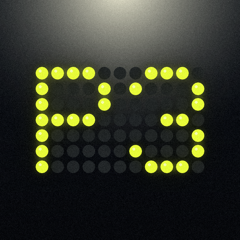

Plus Threes
Plus Threes is a YouTube Shorts channel about the moments that decide games: last-minute winners, penalty pressure, streamer reactions and the best moments from new game trailers.
Watch on YouTube: youtube.com/@Plus.Threes
Plus Threes uploader
“Plus Threes uploader” is a private tool used only by the owner of the Plus Threes channel to schedule uploads of its own videos, post comments as the channel, reply to comments on its own videos and read the channel's own audience statistics, through the YouTube API Services. It is not offered to anyone else.